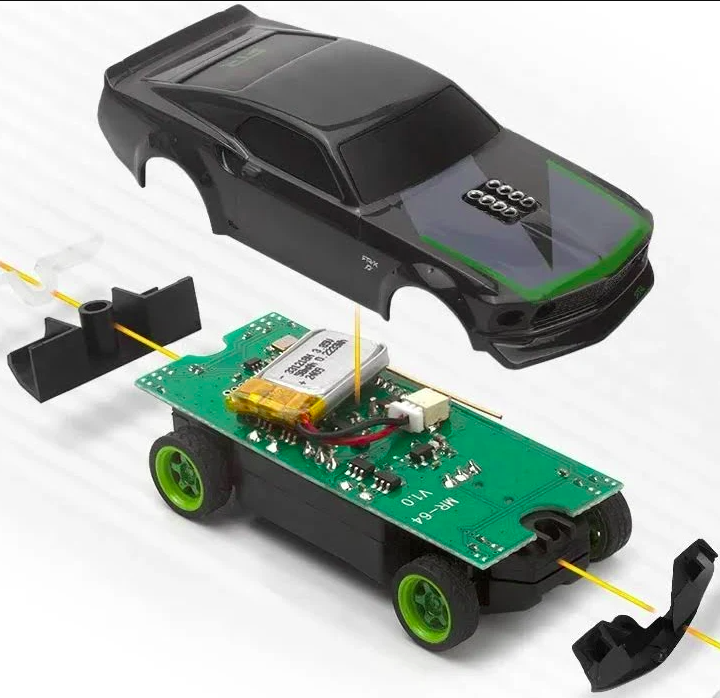
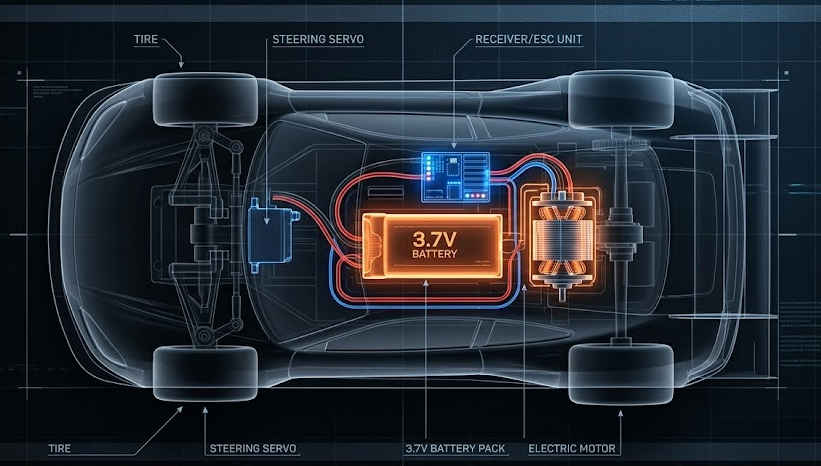
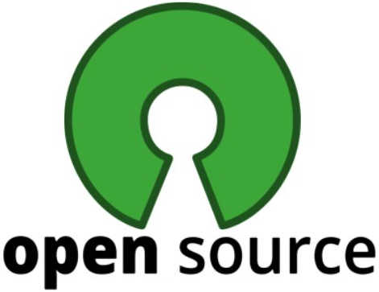
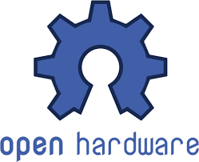

📜 Reglamento Oficial: Gran Premio Oficina RC 1:64
¡Bienvenidos al campeonato oficial de la oficina! Cualquier persona de cualquier área es bienvenida a participar, ya sea como piloto, ingeniero de pista o espectador.
Hemos elegido la escala 1:64 porque es pequeña, práctica, económica y, lo más importante: es la plataforma perfecta para hackear y hacer modding. Queremos que la pista esté llena de coches únicos, modificados con ingenio y espíritu maker.
🔍 Conoce tu maquina por dentro (anatomía del 1:64)

Generalmente tu coche RC es así por dentro, aunque también puede variar un poco. Un chasis de Código Abierto (PCB), motor de alto rendimiento, batería LiPo y las cuatro cubiertas slick. ¡Listo para la acción!
A continuación, detallamos el reglamento completo para asegurar carreras limpias y divertidas.
🚦 Reglas Básicas de Carrera (Para que sea divertido)
- Respeto en la pista: Las carreras de RC son de contacto ("Rubbing is racing"), pero los choques intencionales (estilo kamikaze o frenar en seco para arruinar al de atrás) conllevan descalificación. ¡Sana competitividad ante todo!
- Salidas en falso (Jump Start): Quien cruce la línea de salida antes de que el semáforo de nuestra Web App se ponga en verde, recibirá una penalización de +5 segundos al final de la carrera o deberá salir desde el último lugar en el reinicio.
- Accidentes y Vuelcos (La "Mano de Dios"): Si un coche vuelca o se queda atascado, un espectador o el Juez de Pista podrá actuar como "Grúa" y devolver el coche a la pista en el mismo lugar del accidente.
- Tiempos y Puntuación: Las posiciones finales y los tiempos de vuelta rápida se registrarán en nuestro sistema automatizado de GitHub y se reflejarán en el Dashboard público de Grafana. La decisión del Juez de Pista es inapelable.
🚦 APP Semáforo
El semáforo tiene su propia app para que sea customizable a futuro. ¡Incluye un contador de vueltas, cronómetro y hasta sonido!
🔧 Mods, Hacks y Límites (La Cultura del Garaje)
Diagrama de Homologación 1:64

ESPECIFICACIÓN TÉCNICA APROBADA: Disposición permitida del motor eléctrico, unidad receptora/ESC y paquete de baterías de 3.7V.
Fomentamos el espíritu del Código Abierto llevado al hardware. Se permite (¡y se anima!) a modificar los vehículos para ganar décimas de segundo, pero para mantener la igualdad económica y la seguridad, establecemos las siguientes reglas:
- Alivianado y Carrocería: Puedes recortar, taladrar o cambiar la carrocería por opciones impresas en 3D para reducir el peso. La aerodinámica casera es bienvenida.
- Modificación de Chasis: Cortar, reforzar o alterar la distribución de peso del chasis está 100% permitido.
- Hackeo de Baterías: Puedes reemplazar la batería original por una de mayor capacidad (más mAh) para asegurar que tu coche aguante carreras largas de resistencia. Las 500 Millas de Indianápolis (Indy 1:64).
- El Límite de Voltaje: La batería de reemplazo debe ser estrictamente de 3.7V (1S LiPo/Li-Ion). No se permiten baterías de mayor voltaje para sobrealimentar el motor base, ya que buscamos premiar la pericia del piloto y el ajuste del chasis, no quién compra el motor más explosivo.
- Neumáticos y Agarre: Modificar los compuestos, limpiar las ruedas con aditivos o crear tus propios neumáticos está permitido.
- Tamaño Máximo: Las modificaciones no pueden hacer que el vehículo exceda significativamente las proporciones de la escala 1:64 (aprox. 3.5 cm de ancho), para garantizar que entren 4 coches en nuestra pista de la oficina.
🏁 Formato de Gran Premio
- Prácticas Libres: Tiempo para probar setups, adherencia y calentar pulgares.
- Clasificación (Qualy): 3 vueltas en solitario contra el cronómetro. El mejor tiempo decide la Pole Position.
- Carrera Principal: Sprint a un número de vueltas predefinido por el Juez de Pista (ej. 5 vueltas). ¡El primero en cruzar la meta se lleva la gloria!

